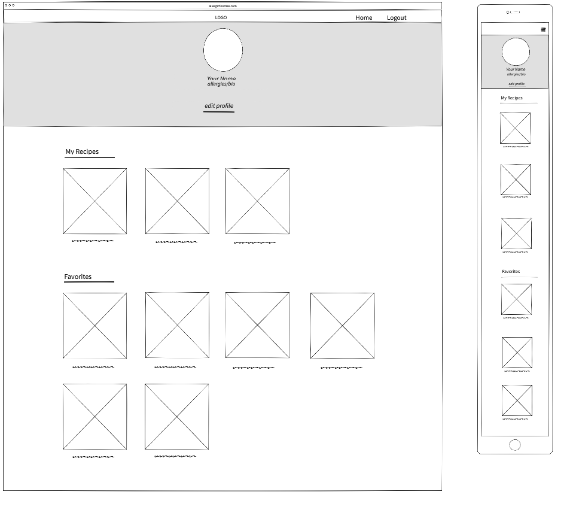

In the account page you will get to set a profile picture, edit your name, and allergies. You can also edit your profile. below your profile you will see a row of your own recipes you have posted. Under your recipes, you will have a list of recent favorite recipes. You can click on "Favorites" and it will take you to a favorites page where you can navigate each meal category.
